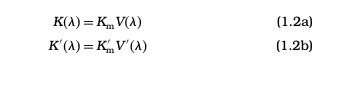

<link rel="stylesheet" href="spectral.css">
<header>
    <nav class="n">
        <ul>
            
            <li><a href="./contact.html">Contact Us</a></li>
            <li><a href="./services.html">Services</a></li>
            <li><a href="./about.html">About</a></li>
            <li><a href="./index.html">Home</a></li>
           
        </ul>
    </nav>
</header>
<div class="navbar">
    <h1>Light, Vision and Photometry</h1>
  </div>
<div>
    <div class="left">
        <a href="./light.html">LIGHT <br></a>
      <a href="./mechanism.html">MECHANISM OF THE HUMAN EYE <br></a>
      <a href="./adaptation.html">ADAPTATION AND RESPONSIVITY OF THE
      HUMAN EYE <br></a>
      <a href="./spectral.html">SPECTRAL RESPONSIVITY AND THE STANDARD
        PHOTOMETRIC OBSERVER <br></a>
        <a href="./definition.html">DEFINITION OF PHOTOMETRIC QUANTITIES <br></a>
        <a href="./photometric.html">PHOTOMETRIC UNITS <br></a>
        <a href="./calculation.html">CALCULATION AND MEASUREMENT OF
            PHOTOMETRIC QUANTITIES  <br></a>
           
            
        </div>
    </div>
<div class="right">
<section id="spectral">
    <h2>SPECTRAL RESPONSIVITY AND THE STANDARD
        PHOTOMETRIC OBSERVER</h2>
    The output of a <a href="https://en.wikipedia.org/wiki/Photodetector" target="_blank"> photodetector </a> divided by the radiant energy input
is called its responsivity. The term can be applied to the human
eye as well as to physical detectors. For the eye, the output is a
brightness response. In the past, the term sensitivity was used,
but responsivity is now preferred. The higher the responsivity, the higher is the output for a given input. When the responsivity is
expressed as a function of wavelength, the curve is called the spectral responsivity. Equal amounts of radiant energy become less
visible to the human eye with decreasing or increasing wavelength
on either side of a maximum. Outside the visible region, which
extends from about 380 to 780 nm, radiation becomes invisible.
Thus the spectral responsivity of the eye is a function of wavelength,
decreasing gradually to zero in the ultraviolet and infrared regions.
Furthermore, since the manner of transfer from light adaptation to
dark adaptation in white light differs from that in red light, it is clear
that the spectral responsivity of rods differs from that of cones. <br>
In general, the spectral responsivity of a photoreceptor is determined for each wavelength by introducing a monochromatic light of
known radiant energy and then measuring the response in the form
of a photocurrent, for example. The response of the eye, however, is
not determined by a physical measurement, but rather in terms of
a brightness sensation. Thus, to obtain the spectral responsivity of
the eye, a means such as matching is employed. More specifically,
in the matching method, a predetermined reference light having a
certain wavelength is used, so that the brightness v of a test light
having an arbitrary wavelength may be matched with that of the
reference light. By measuring the radiant energy e of the test light
in the match, v can be expressed as
</section>

<section>where K is a measure of the brightness per unit radiant energy.
    Thus, K is the responsivity of the eye. (At this stage, the quantities
    and units of brightness and radiant energy have not been defined
    so the units of K are arbitrary. These matters are discussed later
    in this chapter.
     <br>
     The brightness of two different lights can be matched by any of
the following methods:
<br>
1. Direct comparison method. This method comprises directly comparing a test light of wavelength 2 with a reference light of wavelength 1. In principle it is the simplest method, but it is very
difficult experimentally to match, for example, the brightness of
a red light with that of a blue light. Consequently, the results
fluctuate and the method suffers from poor precision.  <br>
2. Step-by-stepmethod.Although it isdifficult to compare thebrightnesses of lights differing greatly in color, those having similar colors can be readily compared. Thus, by using a test light having
a wavelength 2 near the wavelength 1 of the reference light, the responsivity for a wavelength 2 can be determined. Then the
responsivity for a light having a wavelength 3 near 2 can be
obtained by using the previous test light as the reference light. By
repeating this process sequentially, the spectral responsivity for
the whole spectrum can be obtained, step-by-step. <br>
3. Flicker method. By alternately introducing a reference light having a wavelength of 1 and a test light having a wavelength of
2 into the visual field, the color can be made to flicker, for
example, between red and green. On increasing the frequency of
repetition, the two colors merge into one at a frequency of about
30 Hz. Above this frequency, no color change is perceived. In the
example given, the red and green lights merge to yield yellow.
However, if the two lights differ in brightness from each other,
the difference in brightness remains as a flicker even if the colors
merge into one. On further increasing the <a href="https://en.wikipedia.org/wiki/Frequency" target="_blank"> frequency </a> to a value
higher than 50 Hz, the brightness as well as the color merges to
yield a uniform visual field. By utilizing the frequency region in
which the flicker attributed to brightness remains, but that for
color disappears, the brightness of the test light can be matched
with that of the reference light. <br>
In the direct comparison method, results cannot be determined
with high precision. However, a relatively stable result can be
obtained by the step-by-step method or by the flicker method.
By setting the reference light sufficiently dark and performing the
experiment in scotopic vision, the spectral responsivity of the rods
can be measured. On the other hand, if the reference light is set
sufficiently bright, photopic vision operates and the responsivity
curve of the cones can be measured. The spectral responsivity of
the cones can also be obtained by narrowing the observation field
to about 2, because no rods are present in the fovea centralis.
As described above, the value of K in Equation 1.1 corresponds
to the responsivity of the eye. The value of K is called the luminous
efficacy of the <a href="https://en.wikipedia.org/wiki/Radiation" target="_blank"></a> radiation. The spectral luminous efficacy, K, can
be determined by varying the wavelength,  and observing K as a
function of . The maximum value, Km, of K is called the maximum luminous efficacy, and the ratio of K to Km, is called the
spectral luminous efficiency, V. The maximum luminous efficacies, Km and K
m, are related to the spectral luminous efficacies,
K and K
, by the following equations <br>
</section>

<iframe width="560" height="315" src="https://www.youtube.com/embed/xeBXFQTaKls" title="YouTube video player" frameborder="0" allow="accelerometer; autoplay; clipboard-write; encrypted-media; gyroscope; picture-in-picture; web-share" allowfullscreen></iframe>
</div>


